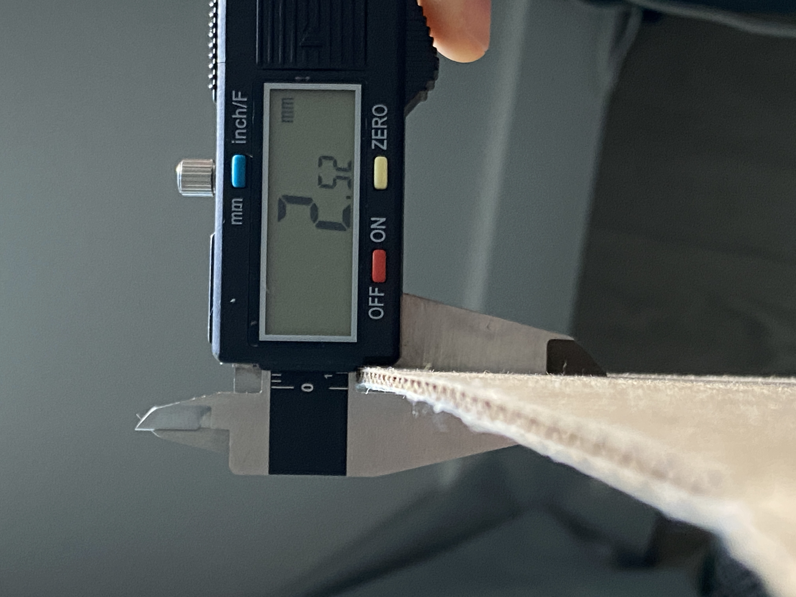
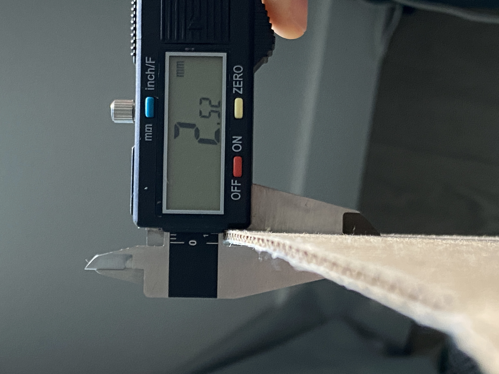
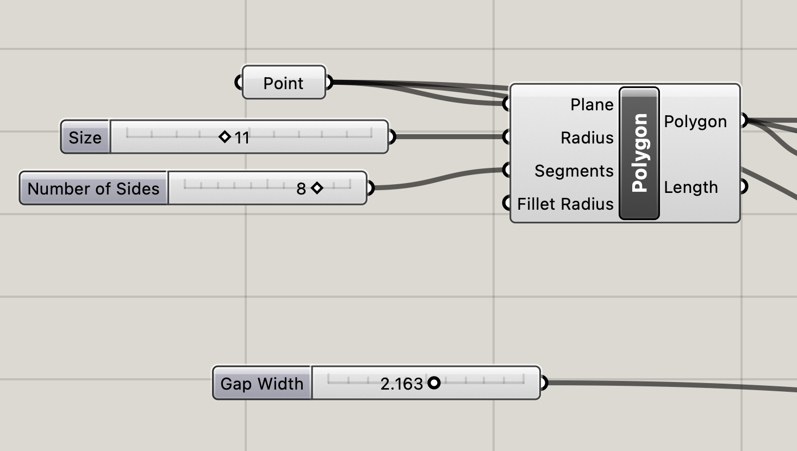
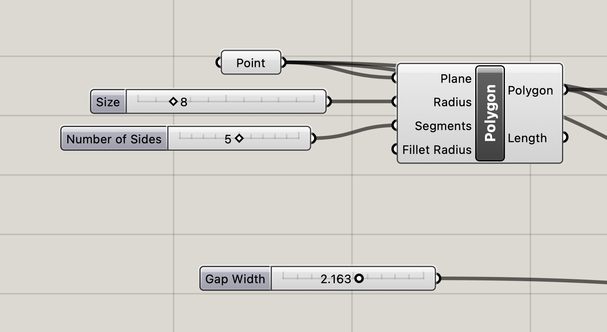
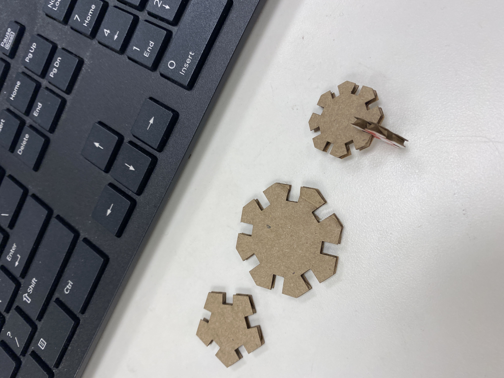
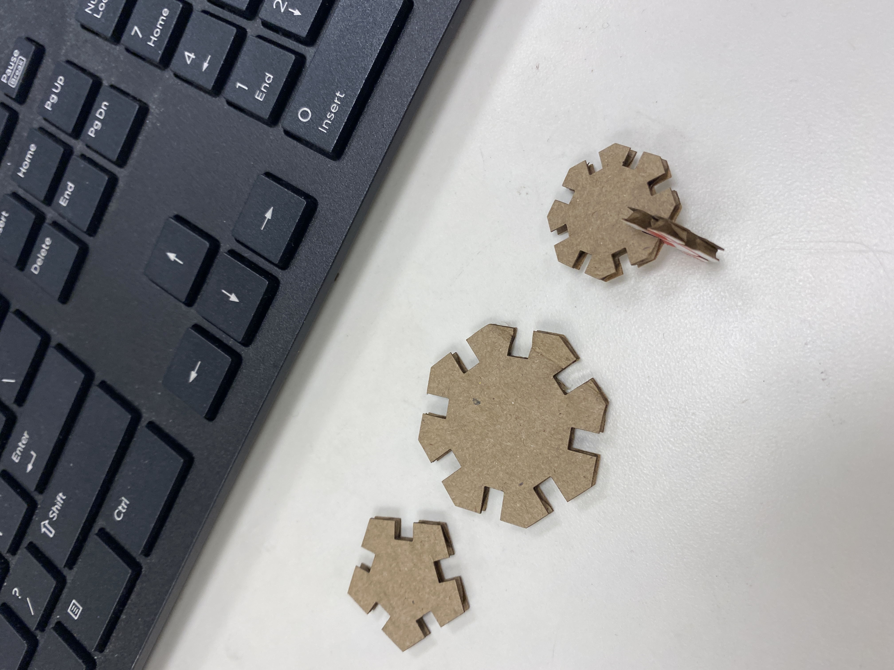

A2: Parametric Modelling with Grasshopper!
Oct. 18, 2022
Here's my finished and assembled Parametric Laser Cut Construction:

Design & Implementation
I wanted to continue the polygon trend with my second project.
 




Laser Cutting
 

I experimented with the size of the shapes to see which size I liked and to see if they would fit.

Laser cutter settings:
- Speed: 100
- Power: 80
- PPI: 300
Acknowledgement
Junchao for the tutorial on grasshopper – it was very much needed to thoroughly understand everything!
Source Files
Rhino fileGrasshopper file
Adobe file
Return to Main